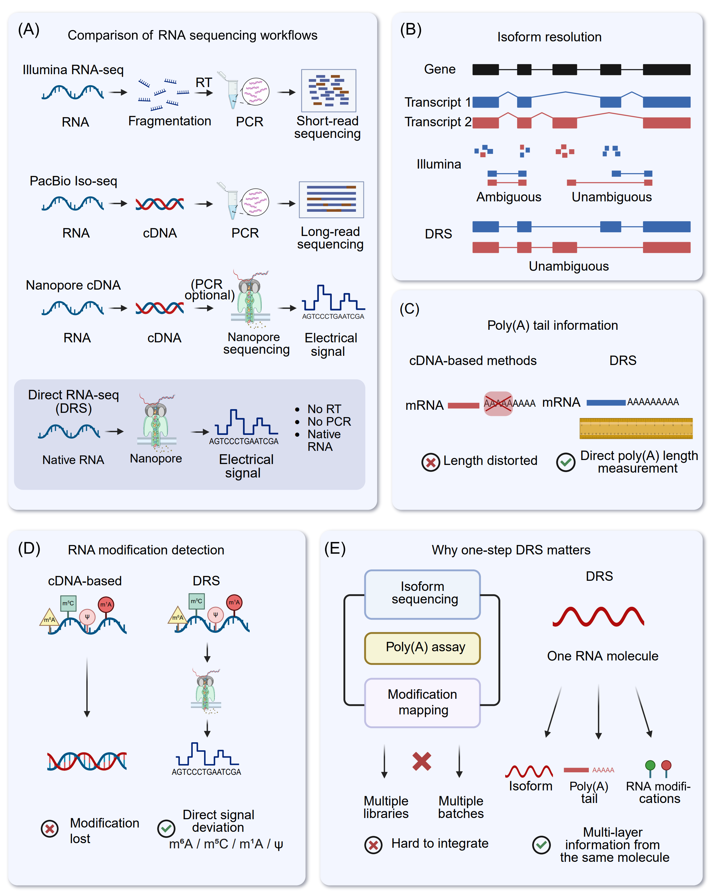

Comparative analysis of DRS technology and traditional sequencing technology
Comparison of DRS and short-read sequencing techniques
The rapid evolution of transcriptomics has substantially enhanced our ability to investigate RNA function, processing, and regulation. Short-read RNA-seq (srRNA-seq), primarily based on NGS platforms such as Illumina and Ion Torrent, remains the most widely used approach because it offers high throughput, strong reproducibility, and a mature analytical and statistical ecosystem [64]. However, as transcriptome research increasingly emphasizes isoform-resolved questions, including which transcript variants are produced, how splicing patterns are coordinated, and which isoforms dominate, the limitations inherent to short read length become more apparent [39], [65], [66], [67]. DRS provides a complementary and, in several respects, advantageous strategy by sequencing native RNA molecules without RT or PCR amplification and by generating long reads that often span full-length transcript (Figure 3A) [9], [26], [35], [68], [69].
{kind=link}

Figure 3. Comparison of RNA sequencing strategies and the unique advantages of nanopore DRS. (A) Comparison of workflows among principal RNA sequencing modalities. Illumina RNA-seq necessitates RNA fragmentation, subsequent reverse transcription (RT), and PCR amplification to produce short reads. PacBio Iso-Seq and nanopore cDNA sequencing provide extended reads from cDNA templates, generally incorporating reverse transcription and frequently PCR amplification. Conversely, nanopore DRS sequences native RNA molecules straight via the pore, generating an electrical current signal for basecalling without reverse transcription or PCR, thus minimizing conversion and amplification-related biases. (B) Isoform resolution. Short-read RNA sequencing sometimes produces reads that correspond to several transcript isoforms, leading to unclear assignments. In contrast, long-read methodologies, especially direct RNA sequencing, provide clearer reconstruction and quantification of full-length isoforms and splice junction connectivity. (C) Information regarding the Poly(A) tail. cDNA-based library building may skew the perceived length of poly(A) tails due to RT/PCR errors, whereas DRS facilitates direct measurement of poly(A) tail length using native RNA signals and/or read characteristics. (D) Detection of RNA modifications. In cDNA synthesis, numerous RNA modifications are not maintained in the resultant cDNA sequence, but direct RNA sequencing (DRS) retains native chemical modifications that can be deduced from modification-related variations in nanopore current (e.g., m⁶A, ψ, and m⁵C). (E) Justification for a single-step DRS. Through the interrogation of a singular RNA molecule, DRS can concurrently ascertain isoform identity, poly(A) tail characteristics, and modification signatures, hence enhancing integrative, multi-layer transcriptome and epitranscriptome investigations compared to methods necessitating distinct assays and batches.
Accurate quantification of genes and transcript isoforms is central to transcriptome analysis. With short reads of typically 150−200 bp [70], gene-level expression can be estimated robustly at scale using splice-aware alignment (e.g., STAR [71], HISAT2 [72]), feature-level counting (e.g., featureCounts [73], HTSeq [74]), and well-validated differential expression frameworks (e.g., DESeq2 [75], edgeR [76], limma/voom [77]). At the isoform level, quantification is usually performed through pseudo-alignment or expectation-maximization(EM)-based models (e.g., Salmon [78], kallisto [79], RSEM [80]), which infer transcript abundances by probabilistically allocating fragments across candidate isoforms. This approach is computationally efficient and can be accurate when isoforms are sufficiently distinct.
A key limitation of srRNA-seq stems from read fragmentation. When transcripts share exons or differ by only a few splice junctions, many reads cannot be uniquely assigned to a single isoform (Figure 3B). Isoform quantification therefore depends heavily on statistical deconvolution and becomes sensitive to reference annotation completeness, sequence mappability, and technical artifacts introduced during library preparation, including GC-content-related effects and PCR-related distortions. These dependencies can reduce both accuracy and interpretability of isoform-level estimates, particularly in complex genomic loci and among highly homologous transcript families [81], [82], [83], [84].
DRS mitigates these challenges by generating long reads from native RNA molecules, preserving transcript structure while avoiding amplification-associated biases. Because individual reads frequently span multiple exon-exon junctions and often cover entire transcripts, DRS provides direct structural evidence for transcript identity and substantially reduces ambiguity in read assignment (Figure 3B) [85]. Isoform-aware quantification can be performed using dedicated tools such as NanoCount [86] or through long-read workflows that combine long-read alignment (e.g., minimap2 [87]) with isoform reconstruction, refinement, and filtering (e.g., FLAIR [88], StringTie2 [89], IsoQuant [90], Bambu [91], miniQuant [92]). Downstream differential analysis can then be conducted using established count-based frameworks such as DESeq2 or edgeR. In this way, DRS reduces reliance on inference-driven isoform quantification models.
The advantages of long reads are especially evident in AS analysis. srRNA-seq is highly effective for identifying splice junctions and quantifying local event-level changes, typically by combining splice-aware mapping with event-centric tools such as rMATS-long (https://github.com/Xinglab/rMATS-long) [93], SUPPA2 [94], MAJIQ [95], and DEXSeq [96]. While this strategy offers strong sensitivity for changes at specific junctions or splicing events, it provides limited information about long-range exon connectivity. As a result, reconstructing full-length isoforms and determining how multiple splicing events co-occur within the same transcript remains challenging. This limitation is particularly evident in cases involving complex splicing patterns, such as exon skipping, alternative donor or acceptor usage, mutually exclusive exons, and multi-event coupling, and it can reduce the completeness of novel isoform discovery [14].
DRS addresses this gap by directly capturing exon connectivity. Long reads preserve the ordered chain of exon-exon junctions within individual transcripts, which strengthens isoform-resolved splicing analysis and supports more accurate identification of complete splice isoforms. Long-read data also facilitate interpretation of transcriptome features that can be difficult to resolve from short fragments alone, including fusion transcripts and additional RNA processing outcomes such as editing or circularization when supported by appropriate analysis [97], [98]. Accordingly, DRS pipelines that integrate long-read alignment with isoform reconstruction and refinement can reveal a more complex splicing landscape than short-read approaches [52].
A closely related application is the identification of the dominant transcript isoforms for each gene, which is critical for interpreting isoform-specific regulation and functional consequences [99], [100], [101]. In srRNA-seq, dominant isoforms are generally inferred from estimated isoform abundances. This inference can be uncertain when isoforms are highly similar because fragment assignment is ambiguous and library preparation biases can distort relative abundance estimates, especially in genes with dense isoform catalogs [64], [82]. By enabling direct counting of reads corresponding to complete isoform structures, DRS can reduce ambiguity in isoform assignment. However, DRS introduces platform-specific biases that must be considered. Poly(A)-based capture commonly enriches the 3′ end, and RNA degradation or sequencing-related truncation can reduce representation of intact 5′ ends [38]. These effects can complicate estimation of full-length isoform abundance and make results sensitive to isoform definitions, filtering criteria, and correction strategies implemented in tools such as FLAIR, IsoQuant, and Bambu.
In summary, srRNA-seq remains highly effective for scalable and cost-efficient profiling, with a robust statistical foundation for gene-level differential expression and event-centric splicing analyses. Its limited read length, however, restricts unambiguous isoform assignment and full-length transcript reconstruction, increasing reliance on probabilistic inference and reference annotations. DRS offers several advantages for transcript identification, AS reconstruction, and isoform-resolved quantification by capturing long, often full-length, native RNA molecules without RT or PCR amplification. Despite remaining challenges, including higher per-read error rates, end-coverage biases, and more complex analytical workflows, continued improvements in Nanopore chemistry, basecalling, and long-read computational methods are expected to further improve the applicability of DRS in isoform-resolved transcriptomics and integrative meta-omics research.
Comparison of DRS with other long-read RNA sequencing techniques
Nanopore DRS, PacBio Iso-Seq, PacBio Kinnex transcriptome sequencing, ONT cDNA sequencing, and ONT Tail Iso-Seq collectively constitute the current core toolkit for long-read RNA sequencing. However, they differ substantially in target molecules, library construction strategies, information layers preserved, and sources of bias [81], [84], [102], [103]. At present, Chinese domestic nanopore sequencing platforms (e.g., Qitan, MGI, Pervitro) are primarily optimized for double-stranded DNA sequencing, with dedicated RNA library preparation kits still under development. They are therefore not considered further in this discussion.
PacBio Iso-Seq, PacBio Kinnex, ONT cDNA sequencing, and ONT Tail Iso-Seq all convert RNA into cDNA, and then into double-stranded DNA, via RT and PCR, thereby producing long-read-compatible templates. The canonical PacBio Iso-Seq workflow comprises full-length cDNA synthesis, size selection, SMRTbell library preparation, and High-Fidelity (HiFi) sequencing, yielding highly accurate reads, often approaching 99%. These high-fidelity reads enable precise delineation of exon-intron boundaries, detailed characterization of complex AS, and construction of high-confidence reference transcript annotations [104], [105]. PacBio Kinnex transcriptome protocols build upon Iso-Seq by optimizing library preparation, incorporating barcodes/UMIs, and introducing normalization steps. These modifications improve sequencing throughput and resource utilization, allowing broader coverage of samples or cell types while attempting to mitigate systematic quantitative distortions affecting transcripts at extremely high or low abundance [106], [107], [108]. Nevertheless, Kinnex remains an intrinsically cDNA-based strategy, and poly(A) tail features and RNA modifications at the single-molecule level cannot be directly preserved.
Standard ONT cDNA sequencing (e.g., SQK-PCS109, SQK-PBK004) similarly employs oligo(dT) and/or random-primed RT followed by PCR amplification. Its main advantages include platform flexibility, relatively modest hardware requirements, and reduced per-sample cost, making it well suited for cost-effective delineation of long-read transcript structure, major splicing events, and a subset of gene fusions. However, per-base accuracy and indel rates depend strongly on the basecalling model and subsequent error-correction procedures. ONT Tail Iso-Seq (SQK-PCS114 and SQK-PCB114), developed from this framework, introduces 3′-end-oriented library design and poly(A)-targeted adapters to enrich information on transcript 3′ ends and poly(A) tails. In this framework, reads typically initiate at the 3′ end and traverse the poly(A) tract, allowing estimation of tail length at the cDNA level and thereby providing more detailed “transcript-structure plus poly(A) feature” profiles. Nevertheless, all cDNA-based workflows are intrinsically dependent on RT and PCR, and therefore subject to systematic biases such as template switching, amplification bias, and chimeric artifact formation.
RT and PCR-related represent major limitations of cDNA-based long-read transcriptomics. Long transcripts or regions with complex RNA secondary structures are particularly prone to incomplete RT and premature termination, often leading to 3′ read enrichment and apparent 5′ truncation, which can be misinterpreted as spurious isoforms. RT template switching and PCR breakage-religation generate chimeric cDNA molecules or incorrect exon combinations, especially in highly expressed transcripts and repetitive regions, thereby confounding the interpretation of exitrons, pseudo-exon skipping, fusion transcripts, and related structural events [28], [109], [110], [111]. PCR efficiency is further modulated by GC content, fragment length, and local sequence/structure context, introducing quantitative biases both within and across samples [11]. In addition, most RNA modifications are effectively “written through” as canonical bases during RT; only a minority give rise to RT stops or misincorporations, producing noisy and indirect signals that are insufficient for comprehensive modification mapping [28]. Poly(A) tail information is distorted during library preparation and size selection, with short tails prone to partial truncation and very long tails often underestimated, limiting inference to population-level distributions rather than precise single-molecule measurements [112].
In contrast, the standard DRS workflow avoids these physical amplification-related biases at the mechanistic level. DRS can capture, within the same read, the full-length splicing structure, the 3′ poly(A) tract (Figure 3C), and the corresponding ionic current signals perturbed by RNA modifications. This enables the characterization of exitrons, complex AS patterns, and fusion transcripts without introducing RT/PCR-derived artifacts, making DRS useful as an orthogonal validation strategy for cDNA-based results in applications where structural false positives are of major concern [113]. It is important to note, however, that DRS introduces its own class of “signal-decoding” errors. Homopolymeric stretches and regions with intricate secondary structure remain challenging to decode accurately, and the influence of RNA modifications on current traces continues to be a central focus of algorithmic development and model training [114].
Rather than viewing these technologies as competing alternatives, it is more appropriate to consider them as a configurable and complementary toolkit tailored to specific experimental objectives. Iso-Seq or Kinnex is typically preferred when the principal objective is to construct a very accurate reference transcriptome. For extensive cohort isoform quantification and mechanism-focused investigations, ONT cDNA or Tail Iso-Seq offers a cost-effective balance between throughput and structural resolution. Investigations centered on poly(A) tail length distributions and 3′-end structures may emphasize Tail Iso-Seq or Iso-Seq/Kinnex techniques that utilize 3′-end-optimized protocols. When the research question centers on the interplay between epitranscriptomic regulation, transcript architecture and dynamics of poly(A) tails, or when the system exhibits heightened sensitivity to RT-PCR induced biases, DRS represents an appropriate methodology. Collectively, these methods are best viewed as an application-dependent toolkit for transcriptome analysis rather than strictly competing technologies. To guide method selection for common research objectives, their relative applicability is summarized in Table S1. Furthermore, a comprehensive comparison of their main advantages, limitations, typical application cases, and verification requirements is provided (Table S2).
Comparison of DRS with other modification detection methods and its positioning in modification detection
Currently, strategies for RNA modification identification have been developed, mainly including LC-MS/MS, specific antibody-based immunoprecipitation, chemical conversion methods, and nanopore DRS [27], [115], [116], [117]. Among them, DRS has emerged as a promising approach in the field of modification detection due to its unique technical principles [118], [119], [120]. In the following, we systematically summarize the core principles, advantages, and disadvantages of these strategies, focus on analyzing the major advantages of DRS over these technologies, and clarify the positioning of DRS in the field of modification detection.
LC-MS/MS is a core analytical platform for RNA modification detection based on tandem mass spectrometry. The method leverages liquid chromatography to separate enzymatically digested oligonucleotide fragments or nucleosides according to properties such as molecular weight and polarity. Eluted analytes are subsequently ionized and analyzed by tandem mass spectrometry, where modifications are identified and quantified via characteristic mass-to-charge (m/z) peaks, with chromatographic retention assisting in site localization [115], [121], [122], [123]. LC-MS/MS is distinguished by its high specificity, accurate quantitation, capacity for multiplexed modification analysis, absence of amplification bias, and sequence-agnostic detection, making it a gold-standard technique in the field [115], [122], [124], [125], [126]. However, it remains constrained by low throughput, lack of single-nucleotide resolution, and loss of spatial context of modifications within RNA molecules [123], [124], [127].
Antibody-based immunoprecipitation combined with NGS is currently the most widely used approach in RNA modification detection. The core step of this method involves the enrichment of modified RNA fragments using antibodies followed by sequencing. And this strategy has been widely used for various modifications, such as m6A [17], [18], [20], [128], [129], [130], m5C [131], [132], 5-hydroxymethylcytosine (hm5C) [133], m6Am [20], [134], [135], ac4C [136], and m1A [137], [138]. For instance, MeRIP-seq (or m6A-seq) was first developed in 2012 for the detection of m6A modification within 100−200 nt fragments using m6A-specific antibodies [17], [18]. With advantages including simple operation, high throughput, low RNA input, and suitability for large-scale screening experiments, this technology has become a widely used technique for RNA m6A modification detection and has promoted the rapid development of epitranscriptomics [139], [140], [141]. Additionally, miCLIP, a single-base resolution m6A detection technology, was developed in 2015 based on the MeRIP-seq [20]. Its core improvement is the addition of an ultraviolet cross-linking step, which addresses the limitation of low resolution in MeRIP-seq. Although these methods have enabled transcriptome-wide identification of RNA m6A modifications at the transcriptome level, however, they still face challenges such as complex experimental procedures, limited quantitative accuracy, antibody preference, and restricted applicability [20], [23], [142], [143].
The pursuit of higher accuracy in RNA modification detection and quantification has driven the development of chemical conversion strategies [131], [144], [145], [146], [147], [148], [149], [150], [151], [152], [153], [154]. Prominent among these are GLORI-seq, designed for m6A mapping, and bisulfite sequencing, adapted for m5C profiling [21], [155]. GLORI-seq enables precise m6A detection by treating RNA fragments with glyoxal and nitrite, which selectively convert unmodified adenosine (A) to inosine (I), while m6A remains intact. During RT, inosine (I) is read as guanosine (G), allowing m6A sites to be identified as retained A signals [21], [155]. Bisulfite sequencing relies on sodium bisulfite to deaminate unmodified cytosine (C) to uracil (U), whereas m5C and hm5C are resistant. Following PCR, U is converted to thymine (T), enabling methylation site identification via C/T mismatch analysis against a reference genome [145], [146], [147]. The principal strengths of this type of strategy include high specificity and sensitivity, single-base resolution, and absolute quantitation capability. Additionally, several approaches have also been developed to map other modifications in a transcriptome-wide manner by coupling this selective labeling reaction to high-throughput sequencing, such as Ψ-Seq, Pseudo-seq, CeU-Seq and PSI-seq for Ψ, ac4C RedaC for T-seq, ac4C-seq for ac4C, and so on [75], [156], [157], [158], [159], [160]. Nevertheless, these methods are constrained by challenges such as incomplete conversion, RNA degradation, technical complexity, and high dependence on RNA structural accessibility, which may limit their applicability in certain contexts [144], [145], [146], [147], [148].
Enzyme-assisted RNA modification mapping refers to a suite of techniques that employ modification-dependent enzymes, such as nucleases, methyltransferases, or deaminases, to recognize, cleave, or chemically alter RNA at specific modification sites [22], [24], [116], [161], [162], [163], [164], [165]. By coupling these enzymatic reactions with high-throughput sequencing, characteristic signals including truncation patterns or base conversions are generated, enabling precise localization and quantification of modifications at single-nucleotide resolution. This approach is widely applied to detect RNA modifications, including m6A, m5C, m1A, and Nm [22], [23], [24], [132], [138], [161], [166], [167], [168], [169], [170], [171]. A representative example is MAZTER-seq (also termed m6A-REF-seq), which exploits the MazF endonuclease whose cleavage at ACA motifs is selectively blocked by m6A, thereby allowing site-specific detection [24], [161]. Although enzyme-assisted mapping offers high specificity, intrinsic targeting capability, antibody-free operation, and base-level precision, it is constrained by limitations such as pronounced dependence on enzyme activity, a relatively narrow substrate range, workflow complexity, stringent reaction conditions, and reduced sensitivity for low-abundance modifications [22], [24], [116], [164].
Nanopore DRS directly sequences native RNA molecules while preserving their intrinsic electrical profiles shaped by chemical modifications [34], [118], [119]. By capturing base-specific disruptions in ionic current and analyzing signal traces using machine learning or deep learning algorithms [56], [114], this approach simultaneously resolves nucleotide sequences and modification states at single-molecule and single-base resolution (Figure 3D). Numerous algorithms have been developed to detect and quantify RNA modifications in DRS datasets [52], [172], [173], [174], [175], [176], [177], [178], [179], [180], [181], [182], [183], [184], [185], [186], [187], [188]. When compared with conventional modification sequencing techniques, DRS demonstrates several inherent advantages. It eliminates preprocessing requirements and the associated signal biases, a feature particularly valuable for detecting low-abundance modifications that are often lost in multistep protocols [114], [119], [186]. Meanwhile, the distinct current signatures produced by different RNA modifications enable concurrent identification and quantification of multiple modification types without the need for separate assays. Furthermore, its amplification-free design preserves the native modification context at the single-molecule level, achieving transcriptome-wide mapping with near base-level resolution, which is a capability largely unattainable by indirect sequencing methods [34], [116]. Perhaps most notably, DRS uniquely integrates high-throughput capacity with long-read capability. This long-read characteristic reveals continuous modification landscapes along entire RNA molecules and facilitates investigation of correlations between modifications and transcript features such as polyadenylation sites (PAS), splice variants, and secondary structures [118], [189].
While DRS has established clear advantages and a distinct niche in RNA modification mapping, it remains under active development and faces several practical challenges. First, the analytical accuracy of modification calling requires improvement, particularly in distinguishing low-abundance or structurally similar modifications. For instance, addressing misclassification arising from subtle current differences between m6A and m6Am [120], [177]. Second, bioinformatic tools require further refinement for robust multi‑modification co‑analysis and de novo modification detection, alongside greater automation to minimize reliance on specialized expertise [162], [190]. Third, per‑sample sequencing costs remain higher than those of established methods like MeRIP‑seq or bisulfite sequencing, limiting large‑scale adoption in resource‑constrained settings [39], [120], [191].
Consequently, DRS is redefining the frontiers of RNA modification research through its distinct analytical advantages, standing as a foundational platform for epitranscriptomic analysis. By preserving and directly reading native RNA molecules, it eliminates inferential steps and inherent biases, offering a direct window into the epitranscriptome. This positions DRS with considerable potential for discovery-driven profiling of novel modifications, deciphering modification crosstalk on the same molecule, and mapping modifications across complete, unamplified transcripts. As such, DRS is contributing to a shift toward a more direct, comprehensive, and functionally insightful understanding of RNA biology.
Strategic library modifications advance DRS methodology
Although Nanopore DRS offers notable advantages, such as generating full-length transcript reads and preserving epitranscriptomic information [9], [35], the conventional DRS workflow faces significant limitations. These include a heavy reliance on native poly(A) tails and an inability to accurately define 5′-end transcript boundaries [52], [120]. To address these challenges, recent developments have introduced a range of derivative strategies, including end-labeling, cap-capture, adapter engineering [192], and in vitro polyadenylation. These innovations have markedly improved the resolution and coverage of DRS, especially for transcription start site (TSS) identification, nascent RNA analysis, non-poly(A) transcript characterization, and small RNA sequencing [35], [36], [52], [192]. Importantly, all of these derivative protocols are still classified as native DRS within the framework defined above, as the molecule translocating through the nanopore and generating the electrical signal is the native RNA strand. Reverse transcription and hybrid adapter designs function only as auxiliary steps and do not convert the assay into a cDNA-based long-read sequencing workflow.
Broadly, these emerging methodologies can be classified into three categories. (1) 3′-end labeling strategies focus on the transcript 3′-terminus and enable the incorporation of RNAs lacking native poly(A) tails into the DRS workflow through in vitro polyadenylation or ligation of poly(A)-containing adapters [120], [191], [193]. These approaches have been widely adopted for single-molecule, long-read profiling of non-poly(A) RNA species, including prokaryotic transcripts, viral genomic RNAs, histone mRNAs, and diverse classes of non-coding RNAs (ncRNAs). For example, NERD-seq enables detection of multiple non-coding RNAs without poly(A) tail by in vitro polyadenylation [194]. Moreover, the incorporation of random priming and thermostable reverse transcriptase can resolve highly structured regions commonly observed in SINE RNAs, snoRNAs, and other ncRNAs. (2) 5′ Cap-capture strategies address the inherent limitations of standard DRS in terms of incomplete 5′-end coverage and imprecise TSS delineation by employing selective enrichment [52], [195]. In prokaryotes, primary transcripts are typically enriched via chemical tagging of the 5′-triphosphate group with a desthiobiotin tag, whereas the canonical 5′-m7G-cap is directly targeted for capture in eukaryotes [196]. When combined with 3′-end tailing strategies, these methods can detect the full-length RNA molecules to accurately identify TSS profiles across the entire transcriptome. (3) Advanced derivative strategies extend beyond basic end-labeling and cap-capture paradigms to enable the interrogation of dynamic transcriptional processes. Representative examples include nanopore analysis of co-transcriptional processing (Nano-COP) and FLEP-seq [197], [198]. Nano-COP couples 4-thiouridine (4sU) metabolic labeling with biotin-based enrichment to facilitate DRS analysis of nascent RNA populations. In parallel, FLEP-seq leverages a selective capture mechanism targeting the 3′-hydroxyl (3′-OH) group to enrich the elongating RNA molecules. This strategy enables the sequencing of full-length transcripts engaged with RNA polymerase, thereby providing direct insights into the diversity of isoforms and co-transcriptional splicing intermediates.
Collectively, these methods harness the distinctive advantages of DRS, including preservation of chemical modifications, generation of long-read sequences, and compatibility with programmable end structures. Together, these features enable integrated characterization of RNA biology, encompassing processes from transcription initiation and splicing to termination and degradation. As a result, they provide a robust technical framework for the generation of high-resolution transcriptomic and epitranscriptomic maps.